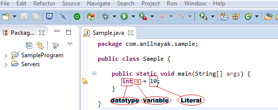

Literals
Literals is any constant value which can be assigned to a variable .

Integral Literals
For Integral data types(byte, short, int, long) we can specify literal value in following ways .
Decimal Literals(base-10)
Allowed digits are 0 to 9 .
e.g: int x = 10;
Octal Literals(base-8)
Literal value should be prefixed with '0' and allowed digits are 0 to 7 .
e.g: int x = 010;
Hexadecimal Literals(base-16)
Literal value should be prefixed with '0x' or 0X' and allowed digits are 0 to 9, a to f(A to F) .
e.g: int x = 0X10;
- By default every integral literals are int type, but we can explicitly specify long type
by suffixed with l or L as shown in below example
e.g: long l = 10L
- Every literal data type should not cross their range value .
For byte and short if the value is within the range of byte and short
then compiler automatically treats it as byte and short value .
e.g: byte b = 127;
short s = 32767;